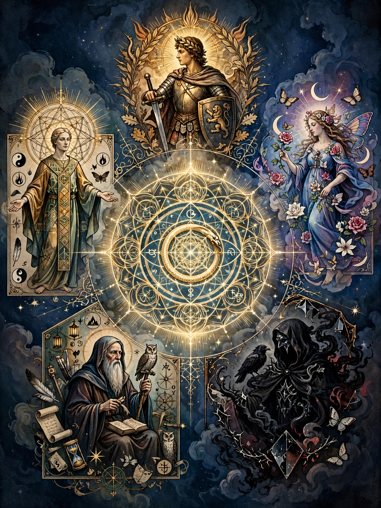

An archetype is a concept from psychology, literary criticism and philosophy describing an original pattern, model or typical example from which other things are derived or copied. The term comes from the Greek arkhétypon, meaning "first-moulded".

| Archetype | |
|---|---|
| Field | Psychology, literature, philosophy |
| Key figures | Plato, Carl Jung |
Swiss psychiatrist Carl Jung developed the concept most influentially. In analytical psychology, archetypes are innate, universal prototypes for ideas, residing in the collective unconscious, and may be used to interpret observations. Major Jungian archetypes include the Persona, the Shadow, the Anima and Animus, the Mother, the Child, the Trickster, and the Self.
In literature, an archetype is a typical character, action or situation that seems to represent universal patterns of human nature — for example the Hero, the Mentor, the Outlaw and the Innocent. Critics such as Northrop Frye applied archetypal criticism to myths and genres.
The idea descends from Plato's theory of Forms, in which particular things imitate eternal archetypes. Later thinkers including Locke, Hume and Kant used related notions of original models in the mind.